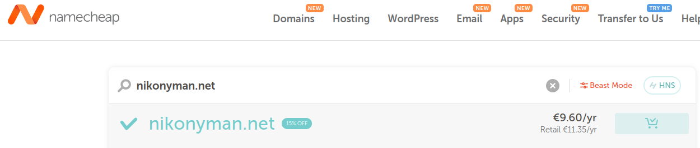
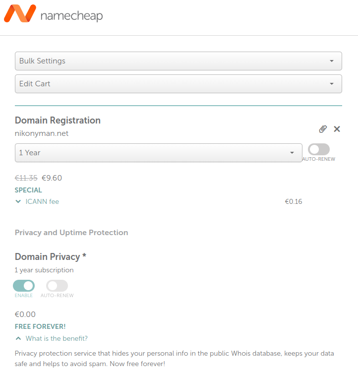
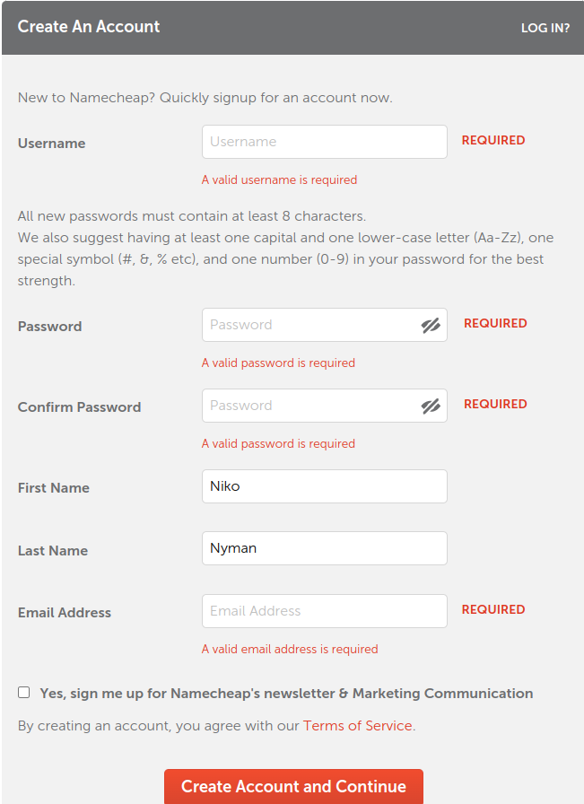
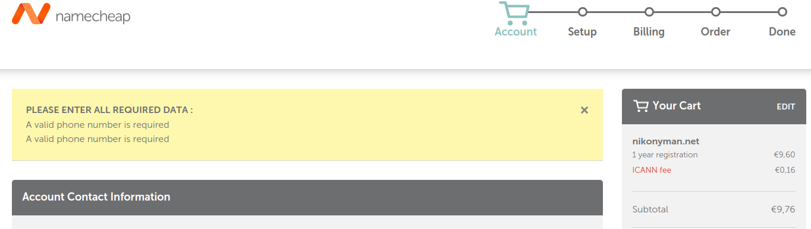
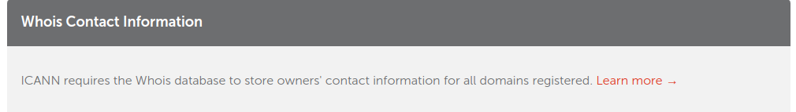
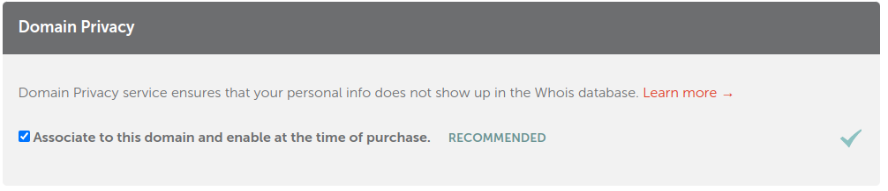
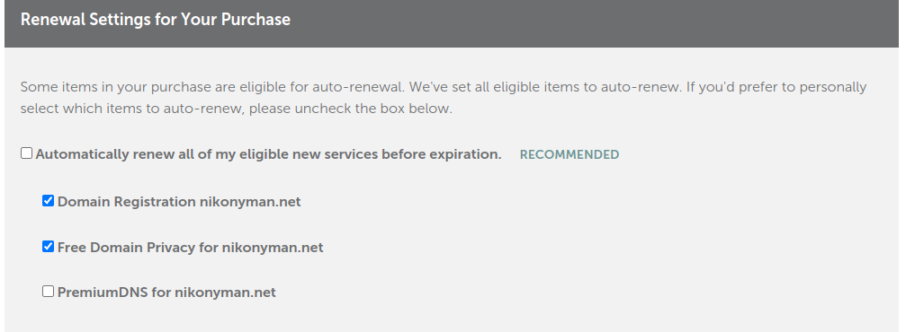
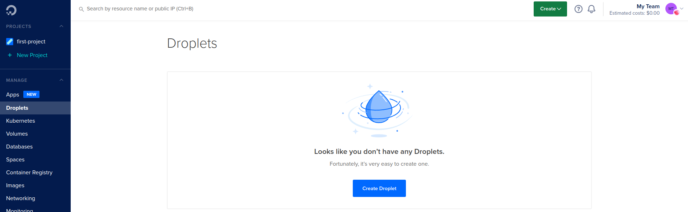

Domain name - namecheap.com
Tehtävänäni oli varata domain nimi ja vuokrata palvelin. Domain nimen päätin ottaa Namecheapistä ja vapaana näytti olevan vielä nikonyman.net - lisäsin nimen ostoskoriin.
 
Ostoskorissa en valinnut mitään lisäpalveluita, mutta annoin kohdan "Domain Privacy" jäädä enable tilaan.
Tämän jälkeen klikkasin "Confirm Order" -painitketta, jonka jälkeen minun tuli luoda tili Namecheapiin.
Klikkasin "Oder now" -painiketta, mutta sainkin virheilmoituksen.

Vaikka rekisteröityminen näytti epäonnistuneen kokeilin kirjautua juuri luomillani tunnuksilla sisään ja yläätyksekseni rekisteröinti meni läpi. Lopuksi sain sähköpostiini koodin, jolla varmennettiin sähköpostiosoite. Kirjauduin sisään ja ja etsin ostoskorin uudetaan, jotta pääsin jatkamaan tilaustani. Account kohdassa täytettiin vielä tilauksen tekijän tietoja.
Setup vaiheessa kysyttiin yhteystietoja - registrant, administrative, technical ja billing. Lisäksi sivulla mainittiin että ICANN vaatii rekisteröityjen domainien yhteystiedot whois databaseen - namecheapin ilmaisen palvelun tulisi kuitenkin piilottaa tiedot.
 Billing vaiheessa täytin korttitiedot ja mahdollisesti auto reneval vaihtoehdot. Päätin uusia domainin vuosittain ja lisäsin reneval settings kohtaan palvelut jotka uusitaan.
Order vaiheessa tarkistin maksutiedot ja hoidin maksun pois alta. Korttimaksu meni hämmentävän nopeasti läpi eikä mitää varmenteita tarvittu. Maksun jälkeen tilaus oli valmis ja navigoin itseni Domain List välilehteen. Ennen kuin jatkoin Namecheapin asetusten parissa, vuokrasin palvelimen.
Palvelimen vuokraaminen - DigitalOcean
Menin DigitalOcecanin sivuille ja täytin vaadittavat tiedot rekisteröitymistä varten. Tämän yhteydessä tuli laittaa korttitiedot ja tililtä tehtiin 1 USD katevaraus.Tämän jälkeen pavelua pystyi selaamaan.

Klikkasin "explore control panel" ja valitsin vasemmalta valikosta "Droplets"
Klikkasin "Create droplet", jonka jälkeen avautui asetussivu.
Distribution - valitsin Debianin uusimman version (11)
Choose a plan - valitsin Shared CPU(basic) ja CPU options kohdassa laitoin täpän Regular Intel with SSD.
Choose a datacenter region - serverin sijainniksi valitsin datacenterin Amsterdamissa.
Authentication - valitsin password vaihtoehdon (huom. vahva salasana!!!)
Finalize - tässä vaiheessa vaihdoin hostnamen vähemmän tietoa sisältävään nimeen.
Lopuksi klikkasin "Create Droplet"
Serverin vuokraus onnistui ja sain IP osoitteen. Seuraavaksi linkitin vuokraamani serverin IP osoitteen tilaamani domain namen alle nikonyman.net. Siirryin namecheap sivulla "advanced dns" -välilehdelle.

Tunnilla annettujen ohjeiden mukaan lisäsin 2 kappaletta A recordeja (www ja @) value kohtaan laitoin vuokraamani serverin ip osoitteen ja TTL määritin 5min. Painoin save changes, jonka jälkeen luomani recordid korvasivat oletuksena olleet.
Lopuksi tarkistin vielä onnistuuko kirjautuminen palvelimelle: